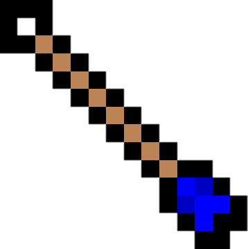

Trésor d'Hyrule
"Parce que vous n'êtes jamais assez préparés pour un donjon !"
 Accueil Accueil |
Nos Produits |
Contact |
| Accueil |
Nos Produits |
Contact |
| 1 |  | = 5 |  |
| 1 |  | = 20 | |
| 1 | = 50 | | |
| 1 | = 100 | | |
| 1 | = 200 | |
La triforce également Puissance des Dieux ou Triangle d'or, est une relique représentant le symbole des trois déesses d'hyrule. La légende raconte que celui qui touchera la Triforce réunie verra un souhait de son choix exaucé. Si son cour es bon, Hyrule vivra l'âge d'or. A l'inverse, si son coeur est mauvais, les ténèbres recouvriront le monde et la Triforce se divisera en lui laissant le fragment qui lui correspond le mieux. La légende de la Triforce dit ceci :
"Il y a très longtemps… Avant le début de la vie, avant la création du monde, trois déesses descendirent du ciel sur l’amas chaotique qui allait devenir Hyrule. L’une s’appelait Din, la déesse de la force, l’autre Nayru, la déesse de la sagesse et la dernière Farore, déesse du courage. Din, de ses bras enflammés, cultiva le sol pour créer la terre rouge. Nayru parsema sa sagesse sur la terre pour donner au monde l’esprit et la loi. L’âme de Farore, pleine de richesses, créa toutes les formes de vie pour le respect de la loi. Leur tâche accomplie, les trois grandes déesses regagnèrent les cieux, laissant derrière elles la Triforce sacrée en or, vestige de leur passage. Dès lors, la Triforce fut à l’origine de la providence d’Hyrule. Le lieu où se trouvait la Triforce devint une terre sacrée appelée le saint royaume."
La Triforce est un assemblage de trois triangles équilatéraux doré placées de manière à former un quatrième grand triangle, ou l'un des triangles. Chaque triangle représente les qualités élémentaires des guerriers : la force (ou le pouvoir), la sagesse et le courage. Ces trois pouvoirs et ces trois triangles rappellent chacun une des trois déesses fondatrice d’Hyrule (respectivement Din, Nayru et Farore).

La triforce comme représentée dans la légende
-50% sur tout les consommables !
-50%  -50% |
-50% -50% |
-50% -50% |